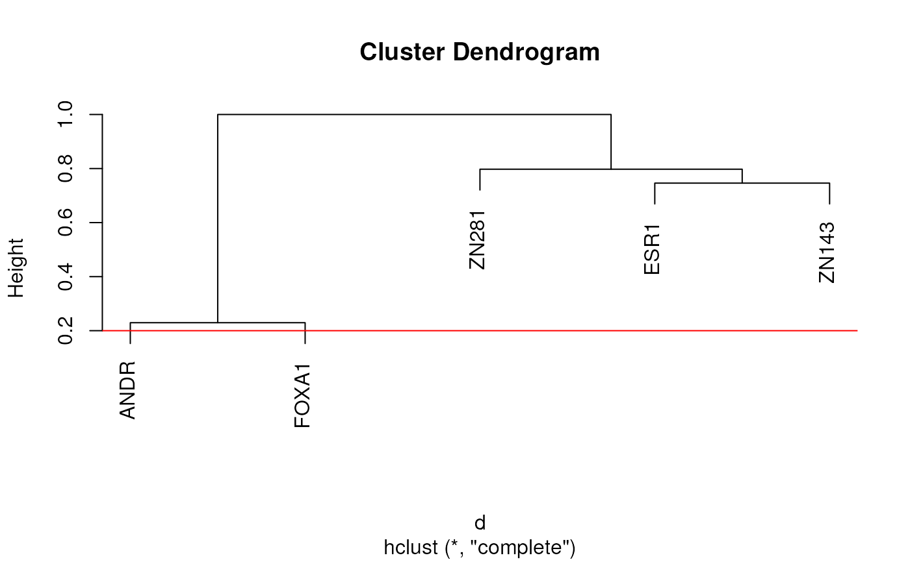

Cluster related motifs for testing as a group
Arguments
- motifs
A list of universalmotifs or a list of PWMs
- type
Can be ICM or PPM
- method
The moetho to be used for determining similarity/distances
- power
Raise correlation matrices to this power before converting to a distance matrix. Only applied if method is either "PCC" or "WPCC"
- agglom
Method to be used for agglomeration by hclust
- thresh
Tree heights below which motifs are formed into a cluster
- plot
Show tree produced by hclust. If requested the value set by thresh will be shown as a horizontal line
- labels, cex
Passed to plot.hclust
- linecol
Passed to abline as the argument
col- ...
passed to compare_motifs
Details
This builds on compare_motifs, enabling the assignment of each PWM to a cluster, and subsequent testing of motifs as a cluster, rather than returning individual results.
Internally all matrices are converted to distance matrices and hclust is used to form clusters. By default, options such as "EUCL", "MAN" produce distances, whilst similarity matrices are produced when choosing "PCC" and other correlation based metrics. In these cases, the distance matrix is obtained by taking 1 - similarity.
By default PWM labels are hidden (labels = FALSE), however these can be shown using labels = NULL as explained in plot.hclust.
Raising the threshold will lead to fewer, larger clusters whilst leaving this value low will return a more conservative approach, with more smaller clusters. The final decision as the best clustering strategy is highly subjective and left to the user. Manual inspection of motifs within a cluster can be performed using view_motifs, as shown in the vignette.
Examples
# Load the example motifs
data("ex_pfm")
# Return a vector with each motif assigned a cluster
# The default uses Pearson's Correlation Coefficient
clusterMotifs(ex_pfm)
#> ESR1 ANDR FOXA1 ZN143 ZN281
#> 1 2 2 3 4
# Preview the settings noting that showing labels can clutter the plot
# with large numbers of motifs. The defaults for Euclidean distance
# show the threshold may need raising
clusterMotifs(ex_pfm, plot = TRUE, labels = NULL, method = "EUCL")

#> ESR1 ANDR FOXA1 ZN143 ZN281
#> 1 2 3 4 5